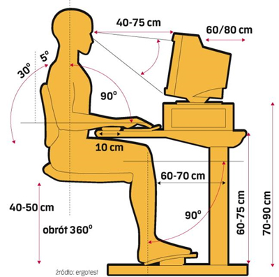

1. Studenci mogą korzystać z pracowni komputerowej jedynie pod opieką nauczyciela prowadzącego zajęcia.
2. W pracowni komputerowej studenci są zobowiązani bezwzględnie stosować zasady BHP w odniesieniu do urządzeń elektrycznych.
3. Pracownia komputerowa jest miejscem, w którym należy zachowywać się kulturalnie i cicho, nie wolno huśtać się na krzesłach, biegać, popychać. Nie wolno stwarzać sytuacji niebezpiecznych dla siebie oraz innych. Studenci powinni stosować się do poleceń nauczyciela prowadzącego zajęcia.
4. W pracowni komputerowej nie wolno niczego jeść ani pić. Należy mieć zawsze czyste i odtłuszczone ręce. Nie wolno dotykać ekranu monitora.
5. Niedozwolone jest dokonywanie przez studentów jakichkolwiek napraw, zmian konfiguracyjnych systemu, samodzielnej zmieniany ustawień konfiguracyjnych sieci, samowolne manipulowanie sprzętem (przełączania i odłączania klawiatur, monitorów, myszy, rozkręcania jednostek centralnych itp.). Studenci nie dotykają żadnych części komputerów poza włącznikami, klawiaturą i myszą. Zwłaszcza nie ingerują w podłączenia przewodów w tylnej części. W szczególności zabronione jest przekładanie jakichkolwiek elementów pomiędzy stanowiskami.
6. Studenci korzystający z pracowni nie mogą instalować żadnego oprogramowania oraz nie pobierają żadnych danych z Internetu bez wyraźnego polecenia nauczyciela prowadzącego zajęcia, nawet jeśli oprogramowanie oraz dane są legalne w świetle prawa.
7. Usuwanie istniejących na dyskach twardych plików jest niedozwolone.
8. Nie wolno tworzyć oraz eksperymentować z programami wirusowymi, niszczącymi zasoby programowe i sprzętowe.
9. Wykorzystywanie sprzętu komputerowego pracowni do gier komputerowych jest niedozwolone.
10.Z Internetu można korzystać jedynie do celów dydaktycznych. Zabrania się korzystania z aplikacji P2P (Kazaa, iMesh, Direct Connect, Overnet, itp.) oraz innych programów służących do pobierania plików z internetu. Nie wolno skanować portów oraz prowadzić innej działalności mogącej sygnalizować próby włamań do systemów.
11.Przed przystąpieniem do pracy, studenci zobowiązani są sprawdzić sprawność sprzętu, na którym zamierzają pracować. O zauważonych usterkach należy bezzwłocznie poinformować nauczyciela prowadzącego zajęcia lub administratora sieci. Uruchamianie i praca przy zdjętej obudowie jednostki centralnej może być przyczyną porażenia prądem elektrycznym.
12.Każdy student powinien dostosować stanowisko pracy do swoich potrzeb (wyregulować krzesło i nachylenie monitora).
13.W razie wypadku (np. porażenia prądem), natychmiast wyłączyć urządzenie stanowiące zagrożenie, powiadomić nauczyciela prowadzącego zajęcia oraz udzielić pomocy przedlekarskiej Opracował mgr inż. Marcin Dąbrowski BHP oraz zasady porządkowe pracowni komputerowej poszkodowanemu.
14.W przypadku zauważenia iskrzenia, wydobywającego się z komputera dymu, wyczucia swądu tlącej się izolacji lub spostrzeżenia innych objawów mogących spowodować pożar, należy natychmiast wyłączyć zasilanie główne i powiadomić o tym fakcie nauczyciela prowadzącego zajęcia. Ponadto należy zgłaszać nauczycielowi najdrobniejsze uszkodzenia lub zdarzenia mogące zagrażać bezpieczeństwu.
15.Studenci włączają i wyłączają komputery wyłącznie na polecenie nauczyciela prowadzącego zajęcia. Rozpoczęcie zajęć nie jest jednoznaczne z koniecznością włączenia jakichkolwiek urządzeń.
16.Po zakończeniu pracy należy doprowadzić stanowisko do stanu wyjściowego. Należy zadbać o zachowanie swoich zbiorów, usunąć zbiory robocze, wylogować się i zamknąć system.
17.Studenci ponoszą odpowiedzialność finansową za szkody spowodowane niewłaściwym użytkowaniem sprzętu komputerowego.
 Źródło